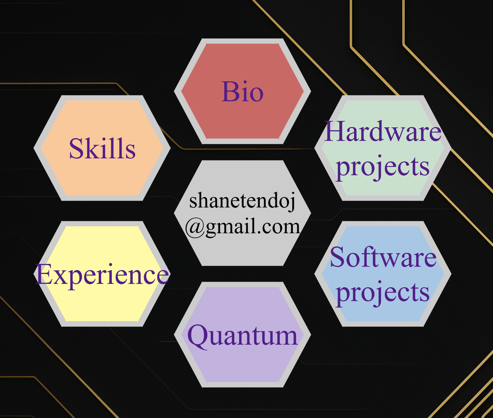
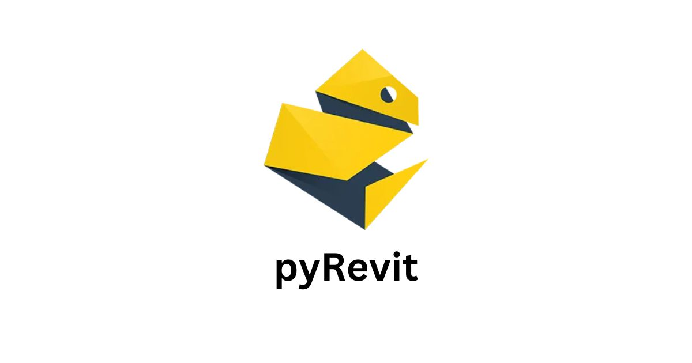
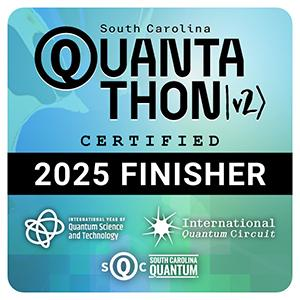
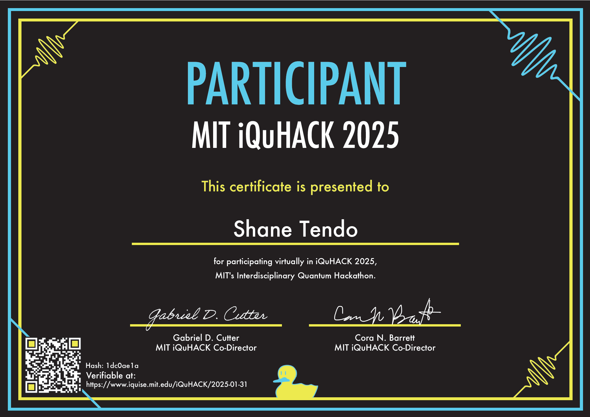
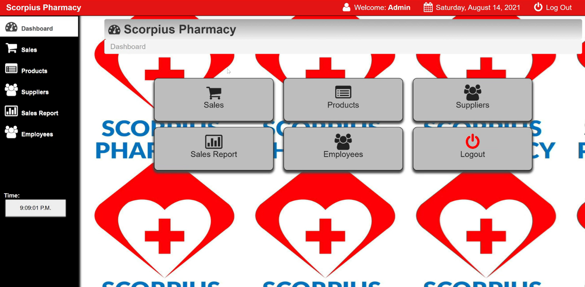

This entire website was hard coded (explaining the questionable design). I made use of HTML, CSS, JS and Github Copilot. With AI, even someone like me can learn how to code pretty decently.


In Summer 2025, I used python and the Revit API to create multiple plugin tools to eliminate repetive tasks in Autodesk Revit. These tools could:
And more!
My team used Quantum Machine Learning to generate a quantum circuit to classify who won a game of tic-tac-toe. The result was able to successfully pull this off with 52% accuracy on IQM's Sirius and Garnet chips.


With Qiskit and Python, I created a quantum circuit that could factorize 15 into 3 and 5. This was a part of the iQuHack 2025 competition and scaled up to 8-bits.
Capstone project under development. Supposed to combine a number of skills including: Docker, RestAPI and Quantum backends.

Used a combination of HTML, CSS and PHP to create a website for Scorpius Pharmacy. The website was used to keep track of inventory, sales and suppliers. Unfortunately, it was retired in 2023 after 2 years of service.